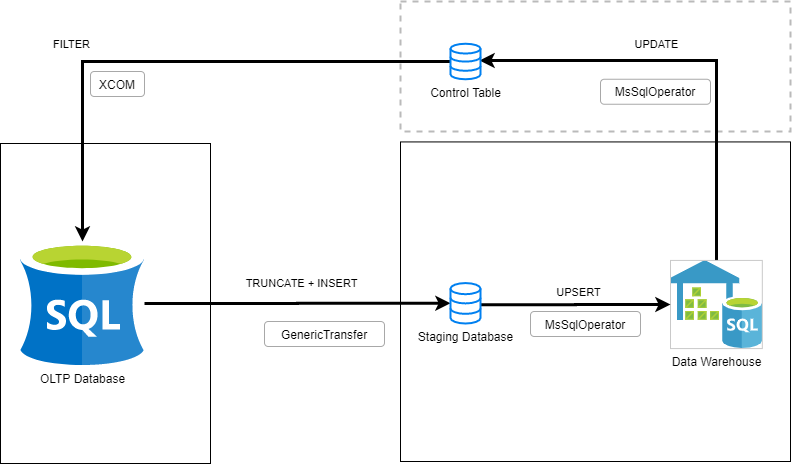
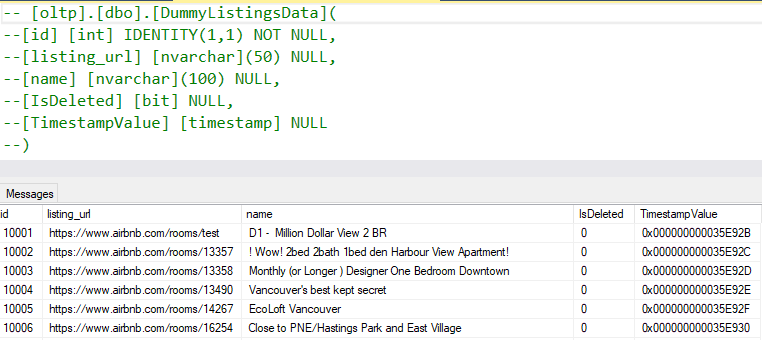

When we look at the etl examples available, they generally explain how to bulk load full data from one table to another. But in reality most of the time we are dealing with incremental load.
In this post I'm going to explain how to build an incremental etl pipeline on Sql Server by using Airflow.
Problem Definition
Imagine that you have started working as a data engineer at your new company. An issue has already been waiting for you:
There is an OLTP table with millions of rows. Insert and update operations occur constantly (fortunately you are in good hands and there are not any delete operations 😊 )
You are going to build an etl pipeline for this table. But in an incremental way just for the new or updated rows.
Possible Solutions
We can build that pipeline with different approaches. Also there may be different settings depending on database engine.
In this case our company uses Sql Server for both the OLTP database and the datawarehouse. So we will implement according to that scenario.
1- Full Load:
Upserting the whole data everytime
You may consider this as an icremental operation, just because we do not TRUNCATE destination table but instead UPSERT it. However I do not accept this as a solution for icremental case. Because it is not performant even for now. Also it will be much worse if your OLTP gets bigger.
2- Control Table Approach:
In this approach you will have a control table about the ETL process. That table will store definitions like: [SourceTableName], [DestinationTableName], [SourceTableFilterValue*], [LastEtlDate] etc.
* Here "SourceTableFilterValue" is the most critical information. Depending on your case that might be: "Timestamp value" or "Primary Key Column" of the source table etc..
In the extraction phase you will extract only new or updated data by applying filter with this value.
As you might guess, after every etl process this value must be updated on the control table. Because on the next run you will use that new value for filtering.
Even though this approach is lean and easy to apply, it still needs some setup:
1- Having a primary key (or just a unique constrainted) column.
2- Having a Timestamp (kind of) column. You will use maximum value of it as "SourceTableFilterValue".
(I definitely prefer Sql Server's built-in rowversion data type. Because it catches the row change and update itself automatically.)
Depending on your case (for example if oltp table won't be updated) you can just use Primary Key colum or something like CreatedOn column.
Or if you trust your application, you can even use a simple datetime column (such as ModifiedOn) for tables that updated. But that assumption will be so naive and dangerous.
3- Finally, it's a no-brainer to have index on the filter column which you choose.
3- CDC Approach:
I will cover CDC in a later post. For now I can just say that CDC requires more setups (also DBA efforts ...) and depends on the DB engine. But on the other side, it gives us details about changes (which operation, which column etc.) , catches DELETE operations and can be used as a streaming data tool.
Workflow
After selecting one of the approaches above and finishing setups, the only thing we should do is to create a DAG with our favourite workflow platform "Apache Airflow" 😍 .
 The workflow that will be implemented on Apache Airflow1- In order to apply filter, we will get SourceTableFilterValue (maximum Timestamp value in this case) from Control Table.
We will get SourceTableFilterValue with MsSqlOperator and push it to the next task with an XCOM.
2- We will transfer (filtered query) data from OLTP table to Staging table by using GenericTransfer.
(Actually we can load data directly to datawarehouse table without using a Staging table. But it has some drawbacks such as: implementing transformations inside transfer task, being constrained to use upsert instead of fast and bulk insert)
3- Since we transfered the data to destination server, we can upsert it from Staging table to datawarehouse in a controlled, flexible* and fast way. We can apply any transformations we want (add calculated new columns, elect columns etc.). Since both tables are on the same server you can encapsulate your sql script in a Stored Procedure and run it from MsSqlOperator in a lean way.
You can load data from Staging table to datawarehouse table in different ways. Most people use built in MERGE statement for sql server. But I prefer not to use it at all because of performance and concurrency issues. Also putting a large MERGE statement into an Airflow task or a general Python code will constrain us while both developing and maintaing.
4- Finally, We can update SourceTableFilterValue on Control Table as maximum TimestampValue of Staging table.
Code
While building the pipeline and testing performance, I have used 1 million rows of data from insideairbnb. Also my testing database server was a db.m5.large AWS RDS istance. Airflow was deployed on an ubuntu EC2 instance within the same region.
 The data that I used for performance testing (from http://insideairbnb.com/)For the sake of simplicity I added just two gist links:
https://gist.github.com/akocukcu/037fdef5db038506d4f9fb78cae62979This one just inserts oltp data to staging table without control and executes merge procedure on sql server afterwards.https://gist.github.com/akocukcu/ac0ec9f4e9b1469888bb7345bb740eed
This one merges into datawarehouse with control and poor performance.
Also you can have a look at the stored procedure script (that use in the first method):
https://gist.github.com/akocukcu/dc41bc289587a2c80de40904e873a8fePerformance Benchmark
With the first method merging 100000 rows (50000 update and 50000 insert) took 77 seconds.
With the second method merging 100000 rows (50000 update and 50000 insert) took 20 MINUTES.
Conclusion
As you can see choosing proposed (first) method gives us a better performance, development flexibility and a lean DAG.
That's it for this post. Thank you for reading.
Refferences:
You can read about different UPSERT methods and also MERGE issues from:
https://michaeljswart.com/2017/07/sql-server-upsert-patterns-and-antipatterns/
https://sqlperformance.com/2020/09/locking/upsert-anti-pattern
https://www.mssqltips.com/sqlservertip/3074/use-caution-with-sql-servers-merge-statement/
https://michaeljswart.com/2012/08/be-careful-with-the-merge-statement/